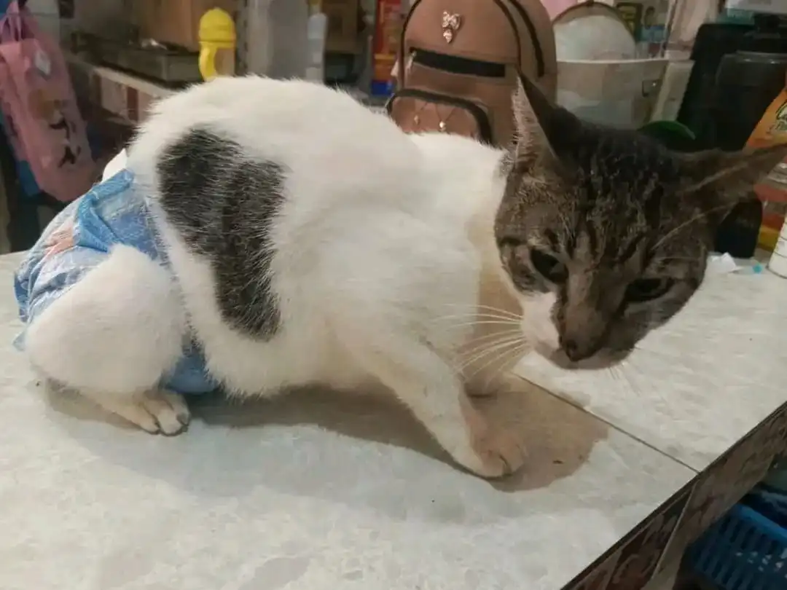

En las calles de Babahoyo, muchos perritos y gatitos enfrentan diariamente el abandono, el hambre y el frío, luchando por sobrevivir sin un hogar ni protección. Estas historias reflejan la dura realidad que viven miles de animales invisibles para muchos, pero que necesitan nuestra ayuda y solidaridad.
Compartimos estos relatos para que conozcas su sufrimiento, pero también su esperanza, y para inspirar acciones que cambien sus destinos. Porque detrás de cada historia triste, hay una oportunidad de dar amor y transformar vidas.
Hermosa
Esta perrita pasó años sobreviviendo en las calles. Fue rechazada, ignorada y maltratada por el problema en su piel. Aun así, nunca perdió la esperanza.Una vecina de gran corazón comenzó a alimentarla y decidió reportarla a nosotros. Al evaluarla, descubrimos que necesitaba un tratamiento costoso. Gracias a la solidaridad de muchas personas, logramos conseguirlo.Hoy, Hermosa sigue sanando, no solo por fuera, sino también por dentro. Cada día su piel luce mejor, y su corazón —aunque herido— se vuelve más fuerte.Ahora sonríe con más confianza, con más vida… y con la esperanza de encontrar, al fin, un hogar que la ame como merece.
Garfiel
A Garfiel lo encontramos en las calles de Babahoyo, solo, herido y con la mirada triste. Con la ayuda de un veterinario, logramos brindarle la atención que tanto necesitaba. Tras varios exámenes, recibimos una noticia dolorosa: su patita tenía una infección grave en el hueso, y la única opción era amputarla.También estaba desnutrido, débil y con el ánimo apagado. Pero no lo dejamos solo. Le dimos todo nuestro amor, cuidados, medicinas y alimento, preparándolo poco a poco para que pudiera tener una nueva oportunidad.Hoy, Garfiel ya no camina solo. Tiene una familia que lo ama, lo cuida y lo llena de cariño. Aunque perdió una patita, ganó una vida llena de esperanza y amor.Porque cada peludito merece un final feliz. ❤️

Marley
Marley es uno de los gatitos más especiales de nuestra manada. Desde hace a√±os lucha con un problema cr√≥nico: constantes obstrucciones en sus v√≠as urinarias. Al inicio intentamos tratarlo solo con medicamentos, pero con el tiempo entendimos que eso no era suficiente para nuestro peque√±o guerrero.Tuvimos que colocarle una sonda para aliviar su dolor y mejorar su calidad de vida. Marley ha estado con nosotros desde hace 5 a√±os, desde el d√≠a en que fue rescatado. Desde entonces, le hemos dado lo que muchos le negaron: una familia, protecci√≥n, atenci√≥n m√©dica... y much√≠simo amor.A pesar de todo, Marley nunca ha dejado de luchar. Y nosotros nunca dejaremos de luchar por √©l.Porque el amor verdadero tambi√©n se demuestra cuidando en los momentos más dif√≠ciles. üêæ‚ù§Ô∏è

Trina
Trina es una increíble corredora de tres patitas.Muchas personas nos dijeron que no la lleváramos a carreras, que por su condición sería muy difícil para ella. Pero en nuestra manada nadie se queda atrás.Trina corrió junto a los suyos, con la fuerza de quien no se rinde y el corazón de quien ha superado lo imposible.Ella es inspiración pura.Todos nuestros peluditos vienen de historias tristes, pero Trina nos demuestra que el pasado no define el futuro.La amamos y jamás limitaremos su proceso, porque ella es capaz de lograr lo que muchos creían imposible.
✨ Perdonó su pasado cruel.
Abrazó su segunda oportunidad.
hoy, vive como se merece.

Mostazo
Mostazo es un gatito comunitario que ha estado luchando con un problema en su piel. Gracias a nuestra ayuda y, sobre todo, a la de ustedes, ha mejorado poco a poco.Sin embargo, el clima de Babahoyo —con su calor y humedad— no juega a su favor. Al vivir en la calle, su recuperación es más lenta y complicada.Hemos tenido que cancelar varios exámenes por falta de recursos, pero no nos rendimos. Comenzamos un nuevo tratamiento con la esperanza de que pronto esté lo suficientemente bien para ser castrado y seguir adelante con una vida más digna y saludable.Agradecemos profundamente a las personas solidarias de su barrio, quienes día a día le dan su medicina y comida, tanto a él como a su mamá.Hoy más que nunca, Mostazo necesita nuestra fuerza, nuestra energía y nuestro cariño.
‚ú® Dese√©mosle mucha fuerza a este peque√±o guerrero. Pronto, con tu ayuda, estará mejor. üêæ

Cada historia que has leído aquí es un llamado a la conciencia y al compromiso. Son vidas que merecen respeto, cariño y una segunda oportunidad. Tú puedes ser parte del cambio: adoptando, apoyando o difundiendo.
Juntos, podemos transformar el sufrimiento en esperanza y construir un mundo donde ning√∫n peludito tenga que sufrir en las calles.
El amor que brindamos hoy será la esperanza que ellos necesitan para un mañana mejor.